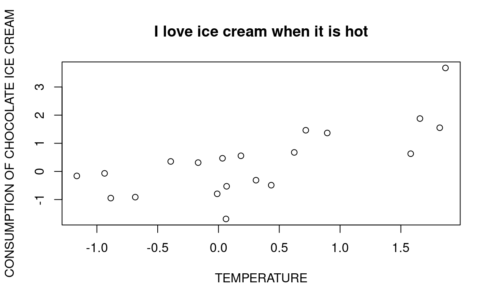

R is a language for statistical computing and graphics.
You can learn more about R at r-project.org and An Introduction to R.
R is distributed for free (under the GNU General Public License) and used by many people around the world to analyse data.
Some statistical software such as SPSS and PRISM are designed that you run analysis by clicking on menus and selecting the analysis to run. This is a quick way to get started, but in the long run can cost more of your time than software based on programming.
To use R you will need to learn to write commands. This has many advantages compared with point-and-click software, including the ability to quickly re-run analysis if the data change, and reproducibility. There is a steeper learning curve than point-and-click software, but investing in learning R may pay handsome dividends. There are many books, online forums and other sources for help learning R.
In this interactuve tutorial you will be introduced to concepts and asked to edit and run blocks of R code as you go. The learning objective is to understand some of the important principles of R that are needed to analyse data.
We begin by introducing the process of how to write commands for the R software.
You can use R like a calculator. For example, to work out 10 times 20 we just enter the following. Run the code to get the answer.10 * 202/3Now your turn. Ask R to calculate 123 + 125
The elementary arithmetic operators are the usual +, -, *, /, and ^ (raise to a power).
Now your turn - ask R to calculate three squared by using the `^’ operator
3^2print("hello world")Technically what we did was given an input (“hello world”) to a function called print(). In this example the quotation marks are important - without them print won’t work. The function print() then does what it says it does.
print("__")print("Why did the..")So, in summary
To use R effectively you will learn to make use of many functions. They are how we do analysis.
Other examples in R include all the common arithmetic functions found on a calculator, such as log, exp, sin, cos, tan, sqrt, and so on.
Use the `sqrt()` function, and give it the input value of 4 between the brackets.In R we can also save or ‘assign’ (or save, write) values to an ‘object’ (something that represents the data, or results of an analysis or other aspect). This is needed for most analysis.
For example, the following ‘assigns’ the value 2/3 to an object called `myval’ (there is nothing special about ‘myval’, it is a name that I chose, you could call it anything that makes sense for the code depending on context).
myval = 2/3myval = 2/3
myvalprint() function
myval = 2/3
print(myval) In R writing the name of the object usually prints out information on what the object is or contains (here it is a number equal to 0.66667).
So far we have used R like a calculator, looking at single numbers. Usually datasets are much larger!
More generally R operates on things called data structures (jargon, but worth learning in order to follow the help files in R).
The simplest data structure is the numeric vector, which is an ordered collection of numbers (and the most simple vector is just a number - a vector with length 1).
To set up a vector named x, say, consisting of five numbers, namely 10.4, 5.6, 3.1, 6.4 and 21.7, then print it out, we use the following R code.
x = c(10.4, 5.6, 3.1, 6.4, 21.7)
x## [1] 10.4 5.6 3.1 6.4 21.7c() is a type of function, like print earlier. The function c() puts the numbers together into a vector (concatenation).
TASK FOR YOU Now try to repeat what we did by entering a vector x2 with elements 1,2,3,4. The code is started - you need to replace __ with the correct command.
x2 = c(__)
x2Enter the elements 1,2,3,4 between the brackets in c().Part of the power of naming objects like vectors, is that we can use them to represent the data in our analysis. For example, we can do some maths using a vector, as we did for numbers above. The following statement displays the reciprocals of the values in x (but doesn’t assign those values to any variable):
x = c(10.4, 5.6, 3.1, 6.4, 21.7)
1/xWe can also use them to create new datasets. The following code uses x to create a vector y with 11 entries consisting of two copies of x with a zero in the middle place.
x = c(10.4, 5.6, 3.1, 6.4, 21.7)
y = c(x, 0, x)
yThere are many functions that can be applied to vectors. Some that are useful to calculate summary statistics are:
max and min select the largest and smallest elements of a vector, respectively.length(x) is the number of elements in x,sum(x) gives the total of the elements in x,mean(x) gives the mean (sum divided by length)sd(x) gives the standard deviationx = c(10.4, 5.6, 3.1, 6.4, 21.7)
min(x)
max(x)
length(x)
sum(x)
mean(x)Now your turn. Calculate the standard deviation of the data saved in x, by adding the correct term to the code below by replacing __
x = c(10.4, 5.6, 3.1, 6.4, 21.7)
sd(__)R relies on you remembering the names of functions used for your analysis. If you forget how they work or want guidance then one nice thing about R is it is easy to get help.
For example, suppose you forgot what mean() does. You would do this by entering ?mean.
?meanTASK FOR YOU Get the R help for the mean() function
You can also get help from the web, such as for mean (same as obtained by ?mean)
The examples at the bottom of the help file are often the most practically useful part of the help file.
A function can sometimes have more than one argument. That is, we can give it more than one input.
For example, if you look at the help file for mean() you’ll see that you can specify more than just mean(x).
You might enter mean(x, trim=0.1).
Why? The reason for including the extra term trim=0.1 is if you want R to calculate what is called a trimmed mean. In this case it would discard the top and bottom 10% (in total) of the data in x. This approach is sometimes used to remove the effect of outliers when giving a estimate of the average - you might think of it as an alternative to the median.
y = c(1,1,1,1,1,1,1,1,1,1000)
mean(y)
mean(y, trim=0.1)The mean in this case is perhaps not a good description of the centre of the data. Almost all the values are 1, but the mean is over 100. The trimmed mean reduces the influence of the extremes of the data.
Task for you: Repeat the analysis but trim the top and bottom 20% of the data)y = c(1,1,1,1,1,1,1,1,1,1000)
mean(y, trim=__)The solution is also 1 - removing the top and bottom 20% does not alter the estimate.*Now try to do all the following steps on your own in the code cell below by filling in the blanks (__). *
trim=0.2y = c(__)
mean(__)
mean(__, trim=__)For many analysis you will pass the analysis function the data to be analysed, plus other information (arguments to the function) to give details on what sort of analysis should be done. There are more examples coming later in this tutorial.
In data analysis it is often very useful to work with logical quantities. For example, if you wish to identify all people aged 60y+ you could define a logical vector to have the values TRUE, FALSE (or NA for “not available”) based on a person’s age.
Logical vectors are generated by conditions. The following expression, for example, sets oldage as a vector of the same length as age with values FALSE corresponding to elements of age where the condition is not met and TRUE where it is (i.e. TRUE if older than 60):
age = c(50, 51, 55, 60, 65, 99)
oldage = age > 60
age
oldage<, <=, >, >=, == for exact equality, and != for inequality For example, does 2 equal 3?
2 == 3# Is 2 NOT EQUAL to 3?
2!=3age = c(50, 51, 55, 60, 65, 99)
age __ 65 Use the double equal sign `==`Sometimes there will be missing value in your data. When an element or value is “not available” or a “missing value” you can reserve a place for it within a vector by assigning it the special value NA. In general, any operation on an NA becomes an NA. e.g NA + 1 = NA. The function is.na(x) gives a logical vector of the same size as x with value TRUE if and only if the corresponding element in x is NA:
z = c(1:3,NA)
z
ind = is.na(z)
indThere is also is a second kind of “missing” value, the NaN or not-a-number, which is produced by numerical computation that cannot be sensibly performed:
90/0
0/0
Inf - InfTASK FOR YOU Create a vector with elements 1,2,3,4,NA. Calculate the mean using the function mean(), and see what happens.
myvec = c(__)
mean(__)R functions may complain if there are missing data. This is useful if you didn’t notice it! If you want to ignore it in the mean() function, you can by adding na.rm=TRUE to the function call.
Do this below
myvec = c(1,2,3,4,NA)
mean(myvec, __)Text or character quantities and character vectors are used frequently in R, for example as plot labels. They’re defined by a sequence of characters inside double quotes, for example:
"x-values"
"New iteration results"x minus values and look to find any named objects called x and values to do this - if it can’t find then you’ll get an error message. Try it out:
x-valuesAs with numbers, character vectors may be concatenated into a vector using the c() function.
labs = c("Label 1", "Label 2")
labsTASK FOR YOU Create a vector with the labels: red, blue, green. Print out.
Copy the code above and change the "Label 1" to "red" etc Subsets of the elements of a vector may be selected in several different ways to do this. We introduce three next.
This selects elements to include using an index vector of the same length as the vector from which elements are to be selected.
The vector values corresponding to TRUE in the index vector are selected and those corresponding to FALSE are omitted.
For example, the following example
x that includes some missing valuesincludeme is defined to be TRUE is the value is not missing (! means NOT, is.na() is a function that checks for NA and returns TRUE if so)x to includeyy contains the non-missing values of x, in the same order, and if x has missing values, y is shorter than x.x = c(50, 51, 55, 60, 65, 99, NA, NA, NA)
includeme = !is.na(x)
y = x[ includeme ]
x
includeme
yNot everyone who uses R uses this approach to select subsets of the data.
subset function. It can achieve the same as the indexing approach above, but is perhaps easier to see what it happening when looking at the code. Here is an example of the same operations as above, but using subset().
x = c(50, 51, 55, 60, 65, 99, NA, NA, NA)
includeme = !is.na(x)
y = subset(x, includeme)
x
includeme
yTask for you: print out the values of age that are more than 60. Do this using the index and subset approach by filling in the __ parts
age = c(50, 51, 55, 60, 65, 99)
oldage = age __ 60
age[__]
subset(age, __)Another way to select which parts of the data we are interested in is to specify the positions. The following selects different parts of the data in x.
x = c(50, 51, 55, 60, 65, 99)
x[2] # The second component of x
x[1:3] # Selects the first 3 elements of x
x[ c(1,2,3) ] #Another way to select the first 3 elements of xTASK FOR YOU Select the 1st, 2nd and 4th element of x and print out
x = c(50, 51, 55, 60, 65, 99)
x[ c(__, __, __) ]If you use R beyond this course I’d recommend to learn the tidyverse approach to manipulating data. It has an even steeper initial learning curve than the above, BUT is very much more powerful and useful.
Vectors are an important type of object in R, and if you understand the above then it is easier to work with other structures. These two re quite useful to understand –
Data frames are matrix-like structures in which the columns can be of different types. Think of data frames as ‘data matrices’ with one row per observational unit but with (possibly) both numerical and categorical variables. Many experiments are best described by data frames: the treatments are categorical but the response is numeric. See Data frames.
Factors provide compact ways to handle categorical data. See Factors.
To end we develop some code to do a data analysis. This involves
The first thing to do in R is to load data. For this tutorial we will use R to make up some data using R itself. We will consider an analysis where there are two continuous variables corresponding the the x and y-axes of a plot. In the example there is a linear relationship between them so y = x + error.
The following code generates the data. You might wish to skip reading this code when you first run through the tutorial, because it uses some functions that you have not been introduced to.
The code generates data for the analysis into a data frame that we name dummy. When you run your own analysis you will usually load data from a file instead (introduced in next tutorial).
# Note: Anything with an hash at the start is interpreted in R as a comment, and does not do anything
# 1. The first data vector are 20 sampes from a standard Normal distribution (mean 0, sd 1)
myvar1 = rnorm(20)
# 2. The second data vector are 20 samples equal to the first data vector plus the first data vector multiplied by another standard normal distribution.
myvar2 = myvar1 + rnorm(20)
# 3. Then we can put them into a data frame, which is used to store data in a table (each row is a vector)
dummy = data.frame(x=myvar1, y=myvar2)First we inspect the data
dummyTo get a quick summary of these data R has the useful function summary()
summary(dummy)## x y
## Min. :-2.27069 Min. :-2.31817
## 1st Qu.:-1.18434 1st Qu.:-1.17735
## Median : 0.13755 Median : 0.13110
## Mean :-0.07171 Mean :-0.01387
## 3rd Qu.: 0.96213 3rd Qu.: 1.08009
## Max. : 2.54827 Max. : 2.58665This tells us the minimm, maximum, median, mean, 1st quantile (75% of data above this point) and 3rd quantile (25% of data above this point) for our x and y columns, that we made up.
We can also do this one statistic at a time by runnning the function (e.g. mean()) on a vector of data. To select a column from a dataframe one may use a dollar $ following the dataframe name, followed by the column name. For example, to only select x from dummy:
#To access each column we use a dollar sign
#e.g. x
dummy$x## [1] -1.5756252 -0.2692003 0.9825409 -0.5323082 -1.0688582 -1.9671013
## [7] 1.4260421 2.5482731 -2.2572080 -2.2706938 0.8015796 1.0799189
## [13] 0.4158523 0.8531590 -0.1013772 -0.2876019 0.9874659 0.3764861
## [19] -1.5307964 0.9553248summary(dummy__x)Hint: Pass dummy$x to the function summary()
y
mean(dummy$__[__])Hint: Extend the previous task by using y in place of x. You might wish to review the material in index vectors for what goes inside [__]: here it is 1:10.
We may also calculate correlation coefficients between x and y as follows.
cor.test(dummy$x, dummy$y)##
## Pearson's product-moment correlation
##
## data: dummy$x and dummy$y
## t = 6.5902, df = 18, p-value = 3.443e-06
## alternative hypothesis: true correlation is not equal to 0
## 95 percent confidence interval:
## 0.6343254 0.9353269
## sample estimates:
## cor
## 0.8408248TASK FOR YOU Calculate the Spearman correlation between x and y by typing “spearman” into the method argument
cor.test(dummy$x, dummy$y, method=__)Hint: Don’t forget the quotation marks
TASK FOR YOU Calculate Pearson correlation between x and itself (should be 1)
cor.test(dummy__, dummy__)Hint: Use a dollar sign $ to choose the column. Both should be x.
We will next show some basic R plots (in time you might wish to use the library ggplot2 for plots).
First, we’ll plot x against y in a scatter plot.
##This is a standard R scatterplot
plot(dummy$x, dummy$y)To add more and customise the plot we can use other arguments to the function plot(). Below adds some labels to x, y axes, and a title.
##This is a standard R scatterplot, but now we've added some labels to the plot
plot(dummy$x, dummy$y, xlab="TEMPERATURE", ylab="CONSUMPTION OF CHOCOLATE ICE CREAM", main="I love ice cream when it is hot")
You will often wish to save the chart and put it into a report. To do this the recipe is
pdf(). If you want to write to a PNG it is png(); others include jpeg(), tiff(), eps().dev.off().For example, the following code follows this to write the above chart to a pdf file called myplot.pdf in a directory called charts.
pdf("charts/myplot.pdf") #open up file writer for pdf
plot(dummy$x, dummy$y, xlab="TEMPERATURE", ylab="CONSUMPTION OF CHOCOLATE ICE CREAM", main="I love ice cream when it is hot") # plot command
dev.off() #write the fileSo now you know how to produce a simple scatter plot in R, and save it.
TASK FOR YOU Reverse the axes - plotx on the y-axis and y on the x-axis. Add some different labels (make them up)
plot(dummy$__, dummy$__, xlab = __, ylab = __, main = __ )Hint: The first argument should be y, the second x. Don’t forget quotation signs for xlab, ylab and main. If you want to leave it blank use ="".